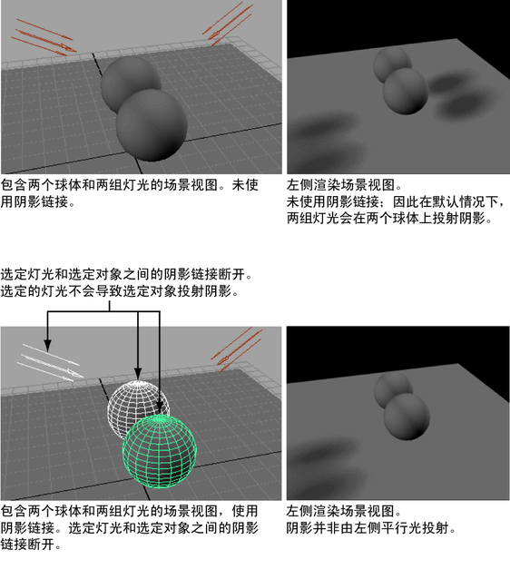

使用阴影链接将光源与曲面进行链接，使选定对象仅投射来自对象链接光源的阴影。该技术类似灯光链接，不同之处在于阴影链接控制阴影计算而不是照明计算。
有关如何创建或断开灯光和曲面之间阴影链接的描述，请参见以下链接：
使用阴影链接将选定灯光链接到曲面（如果使用 Maya 软件渲染器渲染）
- 选择要链接的灯光和曲面。
- 在“渲染”(Rendering)菜单集中，选择照明/着色 > 生成阴影链接(Lighting/shading > Make Shadow Links)。
- 使用“Maya 软件”(Maya Software)渲染时，可以通过光线跟踪阴影或深度贴图阴影渲染阴影。
- 如果通过光线跟踪阴影渲染，请单击每个光源，然后选择灯光“属性编辑器”(Attribute Editor)中的“使用光线跟踪阴影”(Use Ray Trace Shadows)。在“渲染设置”(Render Settings)窗口中，启用“光线跟踪”(Raytracing)。
- 如果通过深度贴图阴影渲染，请单击每个光源，然后选择灯光“属性编辑器”(Attribute Editor)中的“使用深度贴图阴影”(Use Depth Map Shadows)。在“渲染设置”(Render Settings)窗口中，选中“启用深度贴图”(Enable Depth Maps)。
- 在“渲染设置”(Render Settings)窗口中，单击“Maya 软件”(Maya Software)选项卡并展开“渲染选项”(Render Options)部分，查看“灯光和阴影”(Lights and Shadows)属性。将“阴影链接”(Shadow linking)设定为“阴影遵守阴影链接”(Shadows obey shadow linking)。
使用阴影链接将选定灯光链接到曲面（如果使用 Maya 硬件渲染）
- 选择要链接的灯光和曲面。
- 在“渲染”(Rendering)菜单集中，选择照明/着色 > 生成阴影链接(Lighting/shading > Make Shadow Links)。
- 使用“Maya 硬件”(Maya Hardware)渲染时，阴影链接必须连同深度贴图阴影一起使用。单击每个光源，然后选择灯光“属性编辑器”(Attribute Editor)中的“使用深度贴图阴影”(Use Depth Map Shadows)。
- 在“渲染设置”(Render Settings)窗口中，单击“Maya 硬件”(Maya Hardware)选项卡并展开“渲染选项”(Render Options)部分，查看“阴影链接”(Shadow linking)选项。将“阴影链接”(Shadow linking)设定为“阴影遵守阴影链接”(Shadows obey shadow linking)。
使用阴影链接断开灯光和曲面之间的链接（如果使用 Maya 软件渲染器渲染）
- 选择要链接的灯光和曲面。
- 在“渲染”(Rendering)菜单集中，选择照明/着色 > 断开阴影链接(Lighting/shading > Break Shadow Links)。
- 使用“Maya 软件”(Maya Software)渲染时，可以通过光线跟踪阴影或深度贴图阴影渲染阴影。
- 如果通过光线跟踪阴影渲染，请单击每个光源，然后选择灯光“属性编辑器”(Attribute Editor)中的“使用光线跟踪阴影”(Use Ray Trace Shadows)。在“渲染设置”(Render Settings)窗口中，启用“光线跟踪”(Raytracing)。
- 如果通过深度贴图阴影渲染，请单击每个光源，然后选择灯光“属性编辑器”(Attribute Editor)中的“使用深度贴图阴影”(Use Depth Map Shadows)。在“渲染设置”(Render Settings)窗口中，选中“启用深度贴图”(Enable Depth Maps)。
- 在“渲染设置”(Render Settings)窗口中，单击“Maya 软件”(Maya Software)选项卡并展开“渲染选项”(Render Options)部分，查看“灯光和阴影”(Lights and Shadows)属性。将“阴影链接”(Shadow linking)设定为“阴影遵守阴影链接”(Shadows obey shadow linking)。
使用阴影链接断开灯光和曲面之间的链接（如果使用 Maya 硬件渲染）
- 选择要链接的灯光和曲面。
- 在“渲染”(Rendering)菜单集中，选择“照明/着色 > 断开阴影链接”(Lighting/shading > Break Shadow Links)。
- 使用“Maya 硬件”(Maya Hardware)渲染时，阴影链接必须连同深度贴图阴影一起使用。单击每个光源，然后选择灯光“属性编辑器”(Attribute Editor)中的“使用深度贴图阴影”(Use Depth Map Shadows)。
- 在“渲染设置”(Render Settings)窗口中，单击“Maya 硬件”(Maya Hardware)选项卡并展开“渲染选项”(Render Options)部分，查看“阴影链接”(Shadow linking)选项。将“阴影链接”(Shadow linking)设定为“阴影遵守阴影链接”(Shadows obey shadow linking)。
